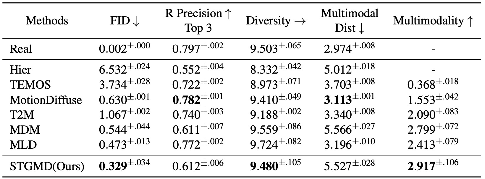
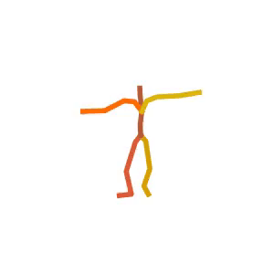
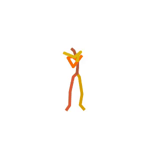
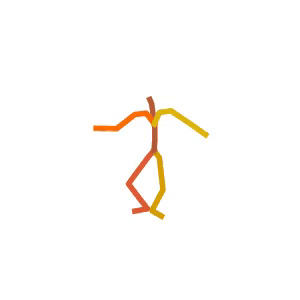

Spatio-Temporal Graph Diffusion for Text-Driven Human Motion Generation
BMVC 2023
Abstract
Text-based human motion generation is challenging due to the complexity and context-dependency of natural human motions. In recent years, an increasing number of studies have focused on using transformer-based diffusion models to tackle this issue. However, an over-reliance on transformers has resulted in a lack of adequate detail in the generated motions. This study proposes a novel graph network-based diffusion model to address this challenging problem. Specifically, we use spatio-temporal graphs to capture local details for each node and an auxiliary transformer to aggregate the information across all nodes. In addition, the transformer is also used to process conditional global information that is difficult to handle with graph networks. Our model achieves competitive results on currently the largest dataset HumanML3D and outperforms existing diffusion models in terms of FID and diversity, demonstrating the advantages of graph neural networks in modeling human motion data.
Approach
STGMD Overview
Sampling Process
Starting with random Gaussian noise, a text description and diffusion step
, STGMD gradually anneals
the noise to a sample
. At each time step
, our model predicts the sample's initial state
and then diffuses it back to
. By repeating these operations
times, the diffusion
process finally yields the sample
. The figure only shows one frame of the graph.
STG-UNet Overview
STG-UNet Overview. The input is a spatio-temporal graph , which
consists of a vertex matrix
and an adjacency matrix
. The STG-Block processes the
vertex matrix and transforms it into a graph representation. The pooling operation is then
applied to select nodes for the coarser scale. This process is repeated for a coarser scale. In
reverse, the unpooling operation refills the previously excluded nodes with empty nodes for
finer scales. Additionally, skip connections are employed to connect graph representations
on the same scale.
Results
Quantitative results on the HumanML3D test set
Visual Results
  A person is performing a rhythmic dance routine with a ribbon.
A person is practicing their figure skating routine.
Someone is practicing their karate kicks.
A person is doing a series of sit-ups on a stability ball.
Someone is jumping over a hurdle.
A person is doing a series of chin-ups.
Someone is practicing their tightrope walking.
A person is performing a series of bicep curls with dumbbells.
Someone is practicing their agility ladder drills.
A person is doing a series of squats.
© This webpage was in part inspired from this template.